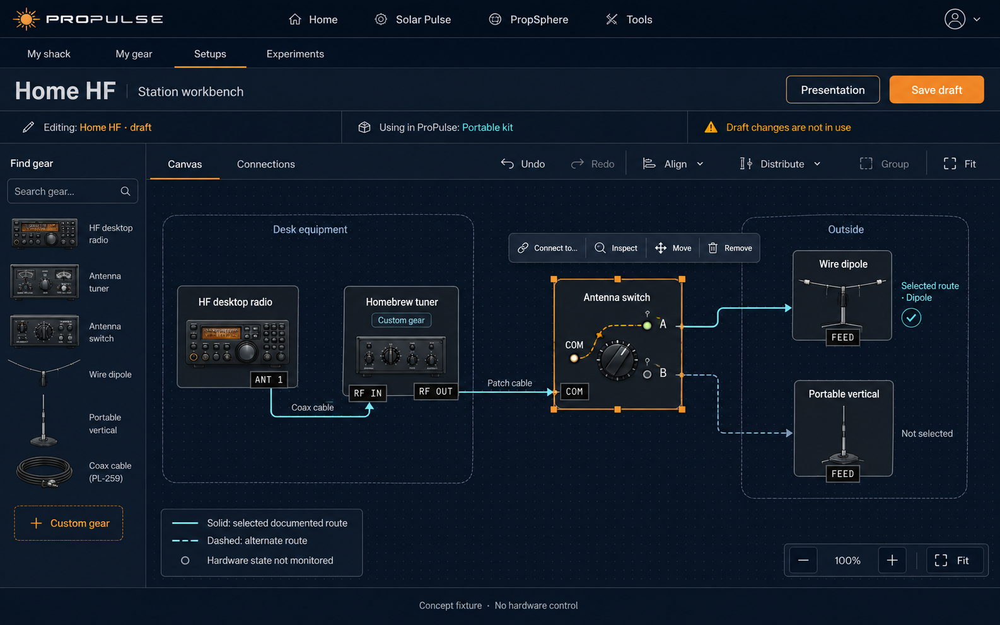
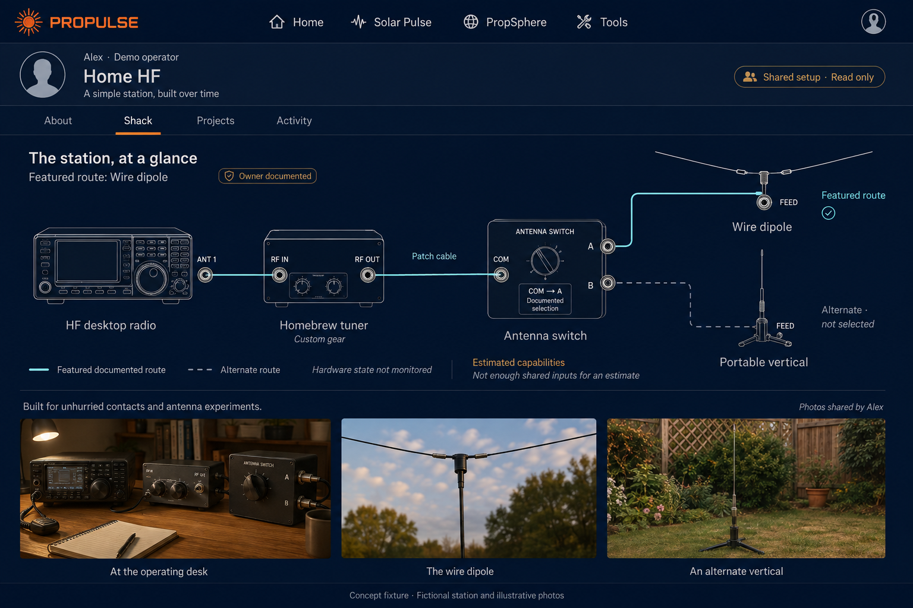
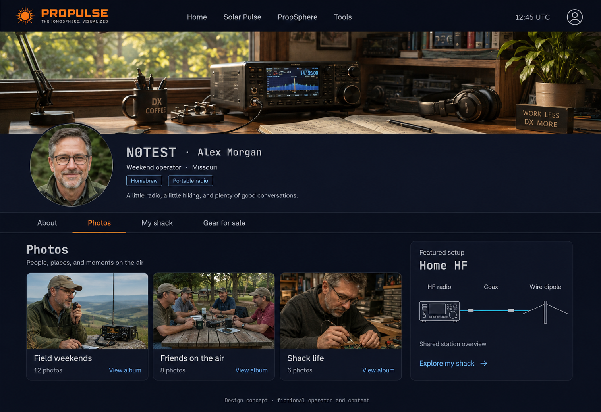
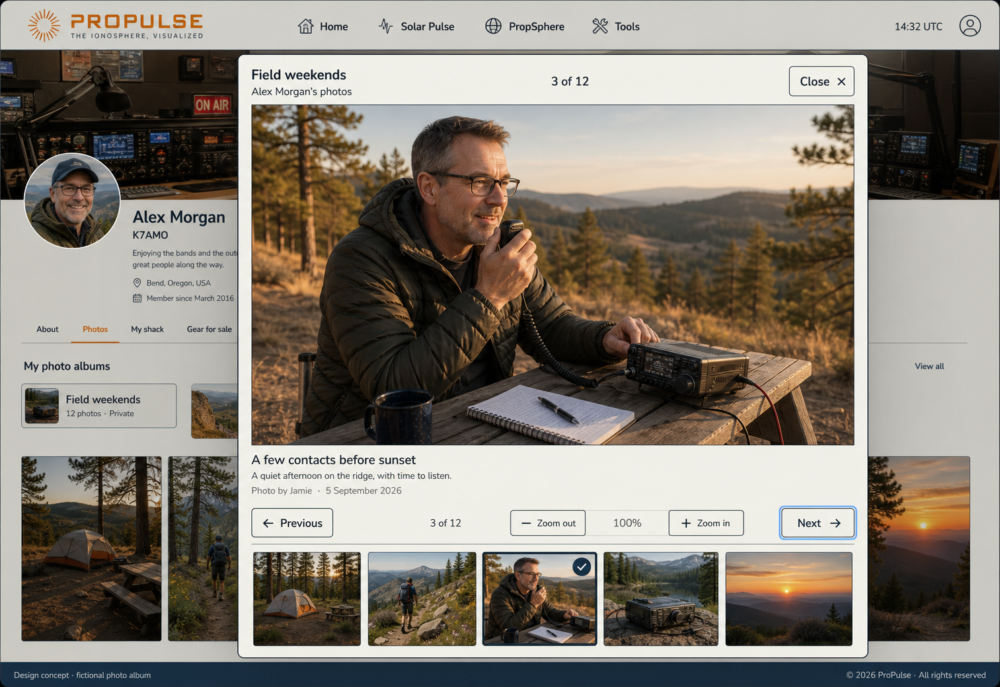
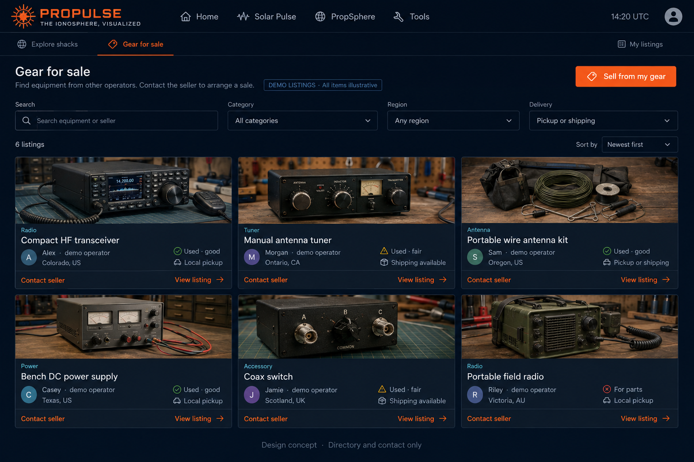
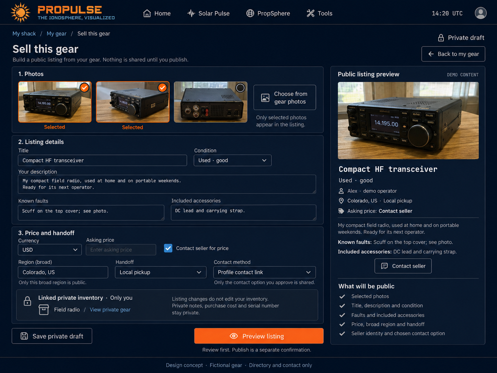
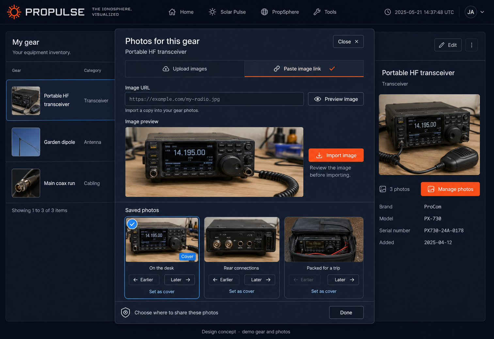

Flowchart editor
Build and arrange the documented station

Named ports, orthogonal cable paths, groups and selection tools make construction direct. The inspector remains a centered dialog.
Station presentation
A clear diagram to share or return to

The same station becomes a composed reading view: featured route, quiet alternate branch, story and setup photos.
Profile and personal albums
The operator behind the station

Independent banner and avatar, personal albums and a chosen station showcase, with separate destinations for Photos, My shack and Gear for sale.
Enlarged photo viewer
Give photographs room to breathe

A daylight owner-view example with a large photograph, caption, thumbnails, explicit navigation and zoom. The viewer also serves authorized public albums.
Gear for sale
Discover equipment from other shacks

A photo-led directory with search, categories, coarse regions, availability and seller contact. Demo listings; no checkout or protection claim.
Sell this gear
Turn one owned item into a deliberate listing

Choose public photos, write condition and inclusions, set asking terms, then preview. Private inventory stays distinct from the published snapshot.
Gear photo manager
Make every piece of gear worth showcasing

Upload images or paste an image link to preview and import a managed copy. Choose a cover, order photos, write captions and deliberately select where to share.